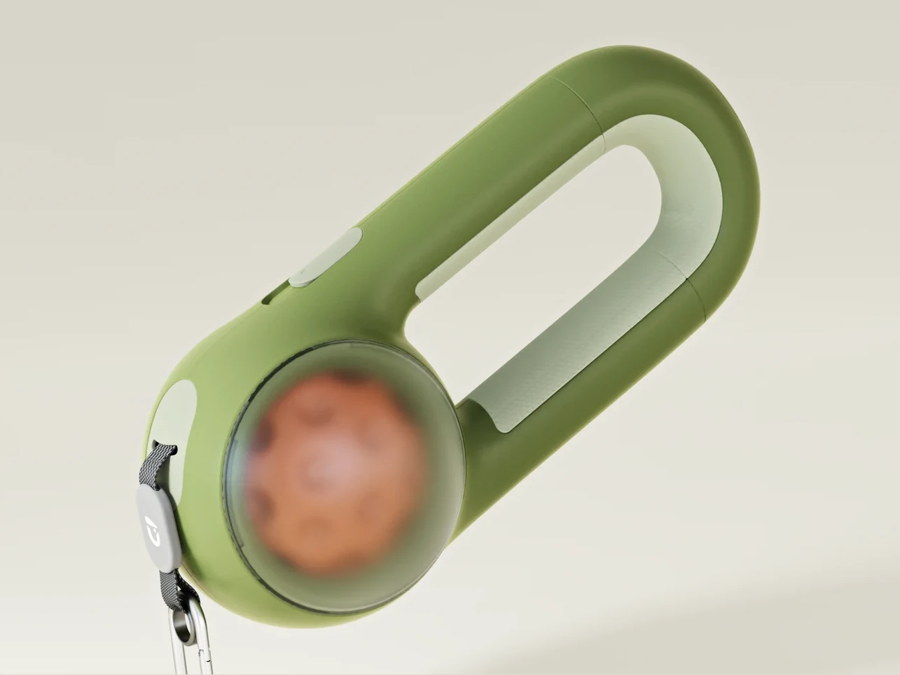
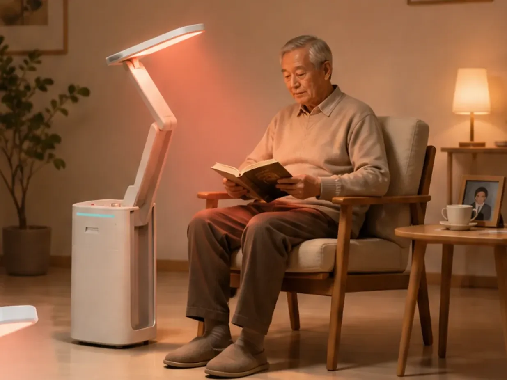
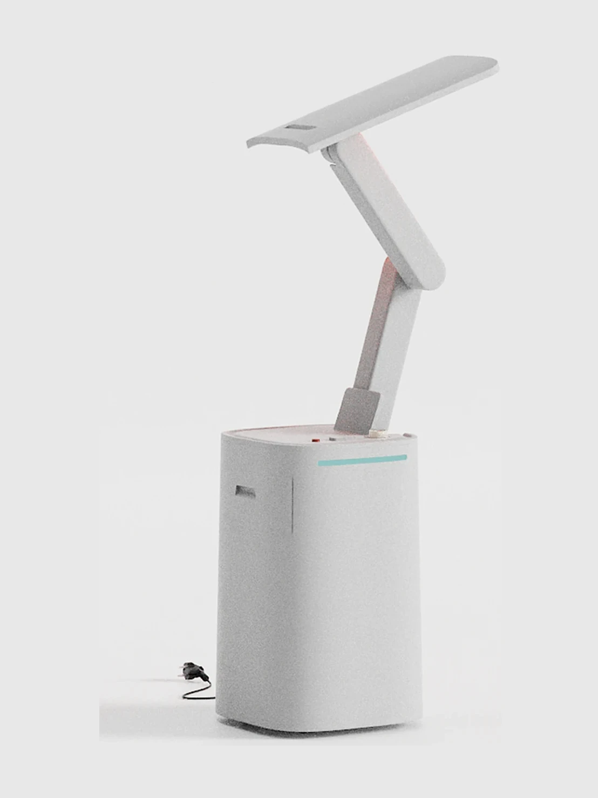
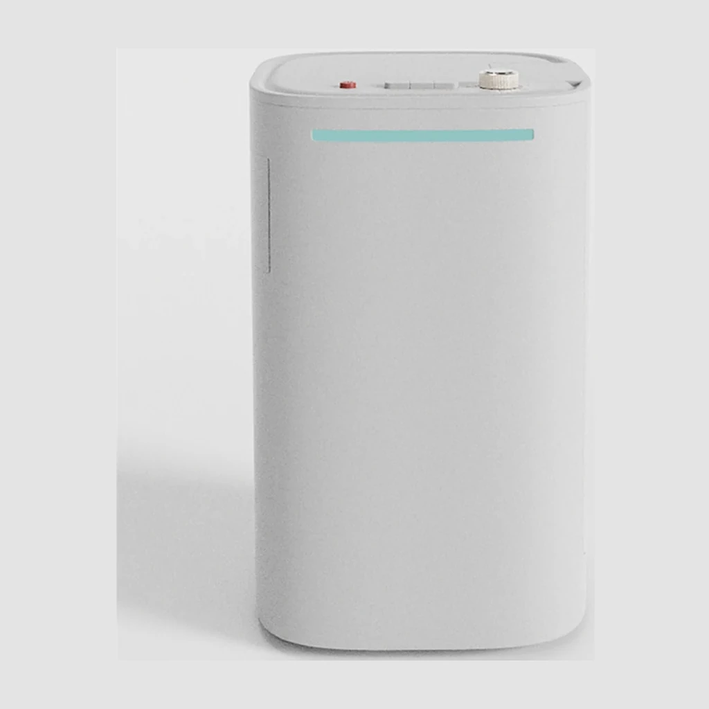
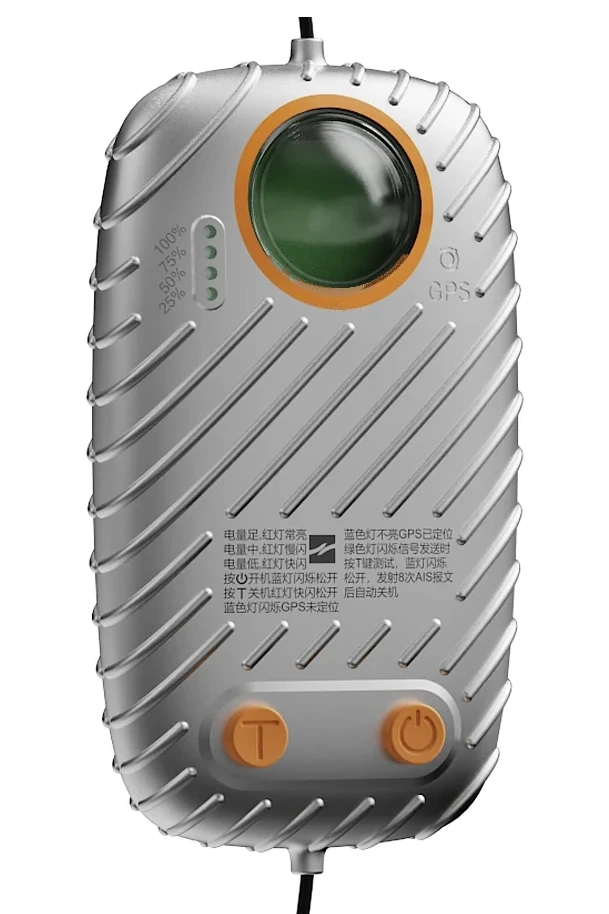
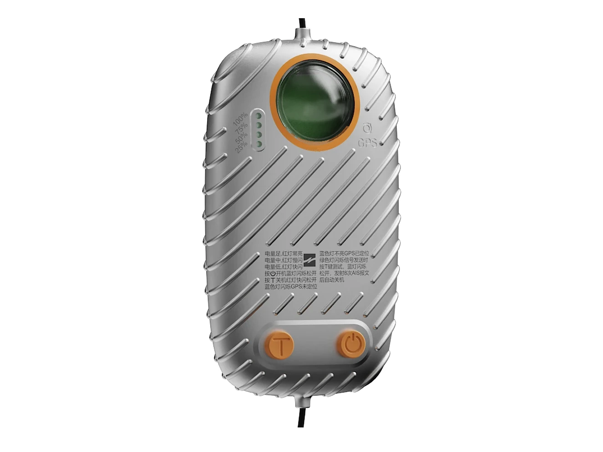
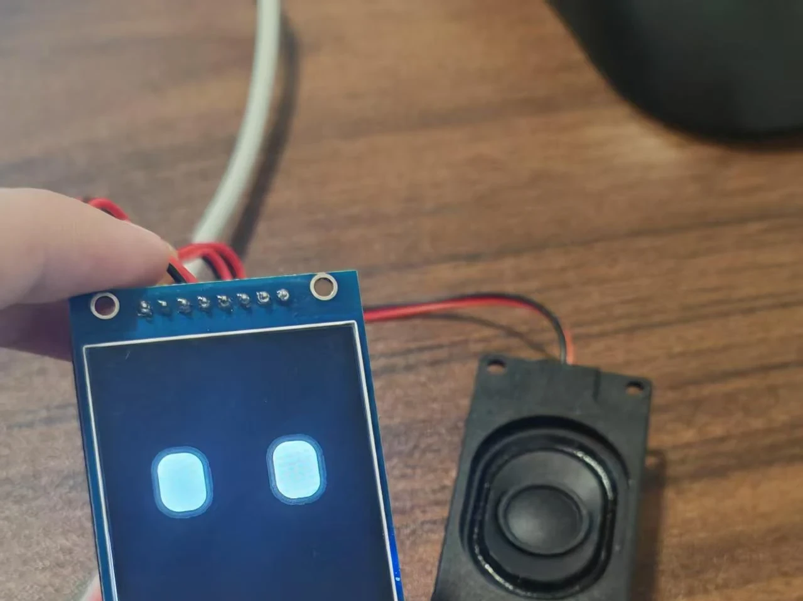
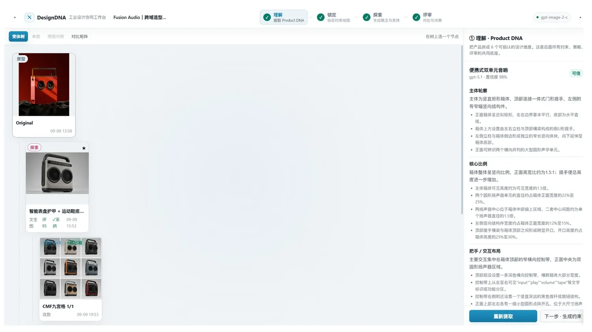
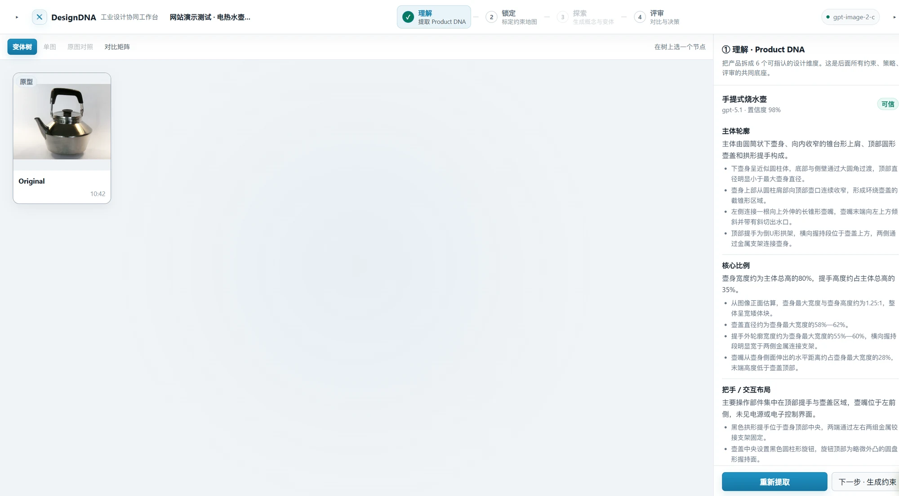

01
产品设计
用户研究 → 产品定义 → 造型 → 结构 → 验证 → 交付
代表：DOGGIE · Lumora 光健康伴护仪

围绕宠物「出门—活动—回家」的连续场景整合高频需求，并通过多轮纸模握持测试真实调整产品比例。
宠物一次完整外出中，牵引、玩具携带、垃圾袋与入户清洁需求分散在不同用品与步骤中。通过用户与竞品研究，我把设计单位从「单一牵引绳」转为一次完整外出链路。
不做「功能越多越好」，而是按外出链路的时间顺序收纳能力。


根据多轮纸模握持测试结果，调整了把手宽度、把手长度与整体比例——比例不是靠渲染定的，是靠手定的。


完成 Rhino 建模与分件、渲染与多视图，并延伸出使用场景、Logo 与包装，形成可直接交付的完整方案。



面向老年疗养照明场景，把照明、收纳、移动与空间效率组织进一套简洁的产品系统。
老年疗养与居家照明场景里，产品要同时满足操作、移动与收纳；而现有适老 / 疗养类灯具普遍太功能化、太「医疗器械感」，造型好看不起来，也难以融入家居环境。
可调灯臂 · 物理控制区 · 抽屉收纳 · 挡板（遮蔽内部部件、保持外观完整）· 移动结构。概念尺寸（Rhino 模型实测），非工程测试值，不做功效宣称。


外观方案与部件细节；完整展板（多视图、尺寸规划、多状态）可点开查看。



在真实商业需求下深度参与外观推进，经历多方向造型发散、客户反馈筛选与约 6 轮定向优化， 使方案逐步收敛至更符合客户需求的方向。
约 6 轮商业迭代：客户反馈 → 定向调整 → 新版
多方向造型探索，并行尝试不同风格。
比例、造型、细节在多个方向间并行比较。
方向选定后转入定向调整，按客户反馈逐轮筛选。
每轮逐项比较比例 · 造型 · 细节 · 配色 / CMF · 结构关系。
新版相比旧版最明显的三处改善：
方向选择的真实依据：最终选定方向更符合客户需求 / 客户偏好。



Running Prototype
面向长期在桌面学习、工作与创作的青年用户，构建「可成长」的实体 AI 机器人系统， 把语音交互、私人后台、ESP32、状态反馈与有限外部设备能力组织成可运行的实机原型。
点亮路径：语音 → 后台 → 实机执行 → 反馈
核心用户是长期在桌面学习、工作或创作的青年——大学生、初入职场的程序员、设计师与内容创作者。场景是个人桌面；出发点是这些能力当前分散在手机、电脑、音箱和不同软件里。
边界：不覆盖儿童陪伴与老人陪护场景。
用屏幕、语音、有限动作与可扩展能力形成角色感：不追求完整人形——桌面空间有限，复杂人形抬高制作成本。
原则：状态表达清楚 > 复杂人形动作。
机器人本体 / 私人后台 / 控制层 / 执行模块。私人后台承担硬件通信、状态同步、ASR、LLM、TTS、模型接入、动作与设备控制指令，以及执行结果回传。


将当前产品的关键设计特征提取为可编辑 Product DNA，通过 Fixed / Controlled / Free 控制 AI 的探索范围。
放得太开 → 不像原产品；限得太死 → 没有探索价值。根因是「哪些特征决定识别性、哪些可以动」没有被显式定义。
工作台先读基准图、识别产品类型，再针对这一件产品动态提取它的 Product DNA（关键设计特征），并在每条特征下写出判断依据。换一件产品，提取出的特征项完全不同。


点一行看这条约束能改到什么程度
按激进程度给出三档探索策略，每一档都用具体的设计语言命名；另有四种发散方式与九宫格批量发散（3×3 = 9 个完整方向）。
评审维度：约束符合度 · 可制造性 · 保持度 · 创新度 · 市场契合，结论为采纳 / 继续迭代 / 否决。硬规则：一旦检测到 Fixed 约束被破坏，这一版无论多好看都不能直接采纳。


已做成可运行的本地 Web 测试原型：左侧为项目与基准图，中间画布支持变体树 · 单图 · 原图对照 · 对比矩阵，右侧即四步工作流。本人负责需求定义、规则组织、交互调整与真实产品图验证；实现借助 AI 完成。
打开界面走查 ↗ 可点：四步工作流逐屏走查


这些能力不是概念——它们进入过真实的产品团队、商业项目与制造现场。
参与 Walker C1 真实版本迭代、实机配置、产品验证与问题闭环。
约 3 个软件版本 · 约 12 项问题 · 2 项个人 Bug · 5+ 类控制 / 交互方式， 跟进修复、延后与后续验证。

建图 · 地图关联 · 点位 · 路线 · 导览 · 领位 · 语音 / 动作事件 · 多终端操作 · Demo。
15+ 文档：SOP · 手册 · 版本说明 · 问题文档。
5G 只作为一张小成果卡：约 1 天完成 Linux 环境下 5G 模块联网适配并沉淀 SOP。
NEXT EXPERIENCE / 02 深圳壹点设计 10+ 商业设计任务 →
从设计想法进入模型、方案修改与视觉交付，在真实客户反馈中持续推进产品方案。
10+ 商业任务，主要涉及智能锁与落水报警终端，以及其他商业产品。
不只负责执行建模，而是在方案推进中加入比例、造型、细节、CMF 判断，并根据反馈持续修改。
NEXT EXPERIENCE / 03 鸿元金属 CNC 数控加工实习 →
进入真实制造现场，建立产品设计与实际加工之间的直接工艺认知。
CNC 高光 · 钻孔 · 铣削 / 攻丝 · 飞面 · 粗打磨 · 成品处理。
自动换刀 · 真空吸附 · 批量加工 · 材料加工表现。
通过制造现场实操，建立对材料、结构、加工空间、表面质量与生产效率之间关系的实际认知， 让后续产品设计不只停留在视觉层面。
从 CNC、商业产品，到机器人与 AI 原型，我更感兴趣的是一个想法如何被定义、被做出来， 并最终真正工作起来。
华南师范大学｜美术学院｜产品设计（本科）
2023.09–2027.06｜2027 届｜深圳 / 广州
产品设计｜产品定义、外观造型、Rhino 建模、概念结构、CMF、尺寸与部件关系、KeyShot / Photoshop
AI 与智能硬件｜模型 API、ASR–LLM–TTS、ESP32、本地唤醒、软硬件原型、Linux、AI 工作流